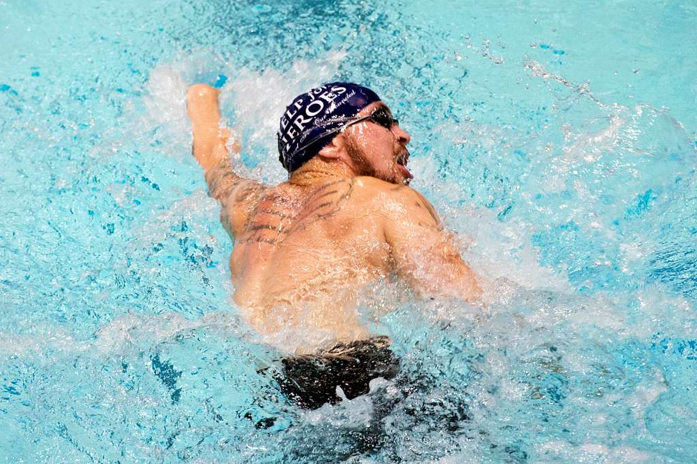
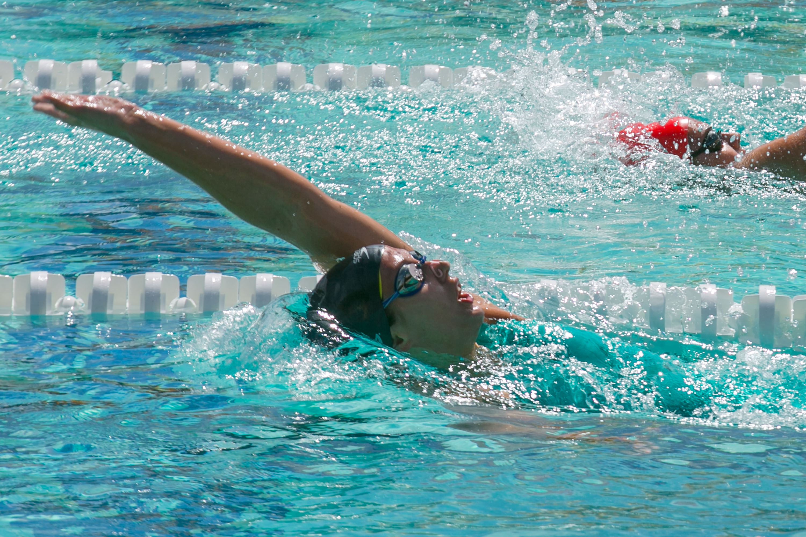
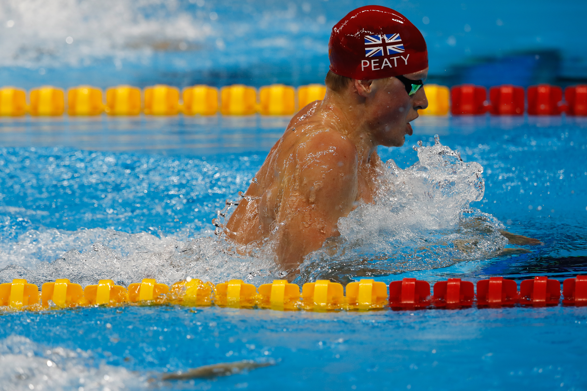
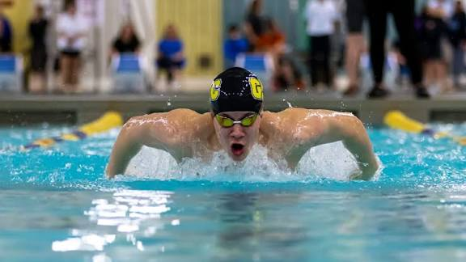

Swim Strokes: Pros and Cons
Swimming is a great way to be fit and have fun. There are many different strokes
Click here for all info on swimming
Freestyle (my favorite):

The Freestyle stroke
Pros:
Fastest stroke
Efficient for long distances.
Cons:
Can be tiring for beginners
requires good technique to be fast.
For more information on freestyle, check out this link:
What is Freestyle?
Backstroke (my third favorite):

The Backstroke stroke
Pros:
Easy to learn
Allows for easy breathing
Cons:
Slower than freestyle
Can be difficult to maintain a straight line.
For more information on backstroke, check out this link:
What is Backstroke?
Breaststroke (my least favorite):

The Breaststroke stroke
Pros:
Has a strong, powerful motion
Good for building chest and arm strength
Cons:
Requires excellent technique
Requires excellent timing
For more information on breaststroke, check out this link:
What is Breaststroke?
Butterfly(my second favorite):

The Butterfly stroke
Pros:
Smooth, flowing motion
Good for building shoulder and core strength
Cons:
Difficult to master
Very tiring
For more information on butterfly, check out this link:
What is Butterfly?